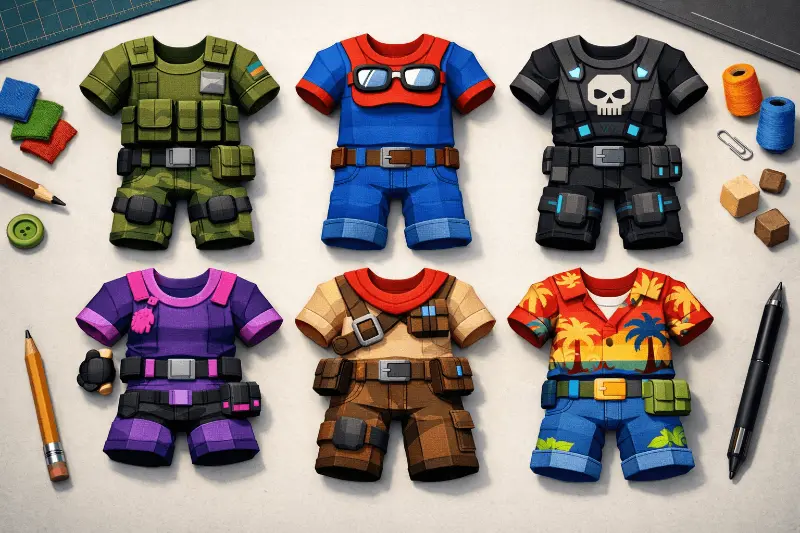

Cómo crear ropa en Roblox y ganar Robux en 2026: guía paso a paso

La economía de creadores de Roblox no empieza con programar juegos ni con dominar Luau. El punto de entrada más accesible es el diseño de ropa: camisetas, tops y pantalones que cualquier usuario puede crear y vender en el catálogo sin necesidad de experiencia en diseño gráfico profesional. En 2026, con más de cinco millones de prendas activas en el mercado, la competencia existe, pero también existe una audiencia de cientos de millones de jugadores. Esta guía te lleva desde cero hasta tu primera venta.
Las matemáticas reales de vender ropa en Roblox
Antes de diseñar nada, entiende las comisiones: Roblox se queda con el 70% de cada venta. Si vendes una camiseta a 50 Robux, recibes 15 Robux. Esto hace que los precios bajos tengan rendimiento muy limitado. La clave para generar ingresos significativos es el volumen y la calidad del diseño. Los creadores que generan ingresos relevantes en 2026 tienen catálogos de 50 a 500 prendas, pertenecen a grupos con miles de miembros y se especializan en un estilo reconocible.
Paso 1: descarga las plantillas oficiales de Roblox
Roblox proporciona plantillas oficiales que definen exactamente dónde va cada parte del diseño en el cuerpo del avatar. Son archivos PNG con guías de alineación que debes respetar para que la ropa se vea correctamente sin cortes ni desalineaciones.
- Ve a create.roblox.com → Configurar → Plantillas de ropa.
- Descarga las plantillas de Shirt (585×559 px), Pants (585×559 px) y T-Shirt (128×128 px).
- La plantilla de Shirt tiene zonas específicas para el torso frontal, trasero, mangas y el interior de las mangas. Cada zona tiene coordenadas fijas.
- Importa la plantilla en tu editor como capa base y diseña sobre ella. Cuando termines, elimina la capa de la plantilla y exporta solo tu diseño en PNG con fondo transparente.
Paso 2: elige tu herramienta de diseño gratuita
Photopea — La más recomendada para principiantes
Editor de imágenes online que replica casi exactamente la interfaz de Photoshop. Soporta capas, máscaras, ajustes de color, filtros y exportación en PNG con transparencia. Se usa directamente desde el navegador sin instalación, funciona en cualquier PC o portátil con conexión a internet y la versión gratuita no tiene límites de tiempo ni marcas de agua en las exportaciones. Es la herramienta de referencia para creadores de ropa de Roblox en la comunidad hispanohablante.
GIMP — El editor de escritorio gratuito más potente
GIMP funciona sin conexión a internet y es más rápido en máquinas antiguas que Photopea. Su curva de aprendizaje es ligeramente mayor, pero tiene tutoriales específicos para crear ropa de Roblox en YouTube. Ideal para diseñadores que prefieren trabajar sin depender de una conexión estable o que ya tienen experiencia en edición de imágenes.
Ibis Paint X — Para diseñar desde el móvil
El editor móvil más completo disponible gratuitamente. Soporta capas, pinceles personalizables y exporta en PNG con transparencia. Algunos de los diseños de ropa de Roblox más populares del catálogo hispanohablante fueron creados completamente desde móvil con esta app. Una opción real para quienes no tienen acceso a un PC.
Paso 3: sube tu diseño al catálogo
- Ve a create.roblox.com e inicia sesión.
- En el panel lateral selecciona "Development Items" → "Clothing".
- Elige el tipo de prenda (T-Shirt, Shirt o Pants) y haz clic en "Upload".
- Completa el nombre de la prenda con términos de búsqueda relevantes —no nombres genéricos. "Chaqueta Negra Aesthetic Grunge 2026" aparece para más búsquedas que "Chaqueta Cool".
- Establece el precio y publica. Roblox revisará el ítem antes de publicarlo (suele tardar entre minutos y 24 horas).
- Una vez aprobado, equípalo en tu avatar y revísalo desde todos los ángulos. Si hay errores de alineación, puedes actualizar el archivo sin crear una nueva entrada.
Estrategias para promocionar tus diseños y aumentar las ventas
- Crea y gestiona un Grupo de Roblox temático: los grupos con temática definida (K-pop, deportes, aesthetic, anime) atraen miembros que buscan activamente ropa que encaje con esa estética y convierten mejor que el catálogo general.
- Usa el nombre de la prenda como SEO interno: el buscador del catálogo funciona por palabras clave. Investiga qué términos usan los jugadores para encontrar ropa similar a la tuya y úsalos en el nombre.
- Crea conjuntos cohesionados: un top que combina perfectamente con unos pantalones de la misma serie vende el doble que prendas aisladas. Presenta las combinaciones en capturas de avatar.
- Comparte en comunidades de Discord: muchos servidores de Discord de grupos de Roblox tienen canales para que los creadores compartan su ropa. Participa activamente antes de autopromoverte.
- Analiza qué vende y replica el patrón: si un diseño genera ventas consistentes, estudia qué lo hace exitoso. Crear variaciones de los diseños más vendidos es la estrategia de escala más eficiente.
El primer Robux es el más importante
Crear ropa para Roblox es la forma más accesible de entrar en la economía de creadores sin necesidad de programar ni de tener equipos especializados. El proceso completo, desde descargar la plantilla hasta publicar tu primera prenda, puede completarse en menos de dos horas con herramientas completamente gratuitas. El primer Robux que generes con un diseño propio valida que el modelo funciona. Desde ahí, cada iteración te acerca a un catálogo con tracción real.